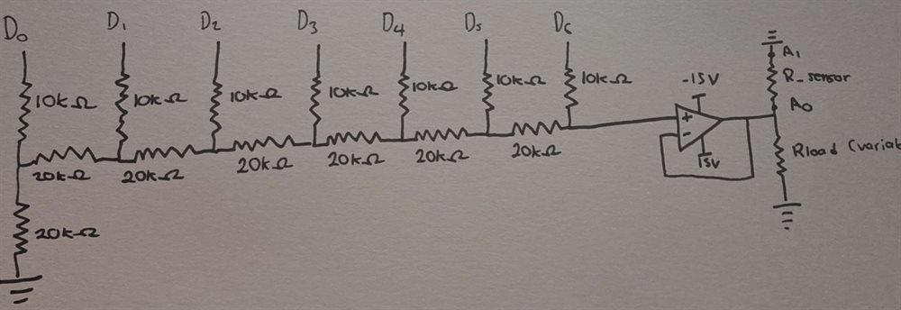

Project · Power & Feedback Control
Fall 2025 · Principles of EE I Lab
7-Bit Constant Current Supply
Build an Arduino-programmable current source: up to 10 mA, set in 0.5 mA steps, and held within ±0.25 mA of the setpoint.
- ±0.25 mAregulation spec
- 7-bit DAC0.078 mA per step
- 47 Ωcurrent-sense resistor
- 4 Ω–1.3 kΩloads regulated


What I did
- A 4-bit DAC gave steps of about 0.6 mA, too coarse for the spec, so we redesigned it as a 7-bit R-2R DAC.
- Potentiometer control had a dead zone that rewiring and part swaps couldn't fix, so we replaced it with closed-loop feedback.
- The Arduino reads the voltage across the sense resistor, computes the current, and steps the DAC toward the setpoint every 100 ms.
My role
Team of two. Circuit build, debugging, and the Arduino control loop.
Result
Held regulation from 4 Ω to 1.3 kΩ. It failed at 47 kΩ, which would need over 23 V, beyond the 15 V limit, so the failure matched the physics.
Takeaway
When a part keeps fighting you, sometimes the fix is a better architecture.